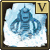

|
Roving Elves |
Complete the Roving Elves questRequired for Plague's End and Priffddinas. |
 |
Mourning's End Part I |
Complete the Mourning's End Part I questRequired for Plague's End and Priffddinas. |
 |
Mourning's End Part II |
Complete the Mourning's End Part II questRequired for Plague's End and Priffddinas. |
|
Impressing the Locals |
Complete the Impressing the Locals questRequired for the Arc, and elite dungeon chest teleport. |
|
Bringing Home the Bacon |
Complete the Bringing Home the Bacon questRequired for making Binding Contracts. |
|
One Small Favour |
Complete the One Small Favour quest2 XP lamp on Herblore Herblore |
 |
Legends' Quest |
Complete the Legends' Quest quest4 XP lamp on Herblore Herblore |
|
Recipe for Disaster: Freeing the Goblin Generals |
Complete the Recipe for Disaster: Freeing the Goblin Generals questOptional: Small amount of EXP and 1 QP. |
|
Recipe for Disaster: Freeing the Lumbridge Sage |
Complete the Recipe for Disaster: Freeing the Lumbridge Sage questOptional: Small amount of EXP and 1 QP. |
|
Recipe for Disaster: Freeing the Mountain Dwarf |
Complete the Recipe for Disaster: Freeing the Mountain Dwarf questOptional: Small amount of EXP and 1 QP. |
|
Recipe for Disaster: Freeing Pirate Pete |
Complete the Recipe for Disaster: Freeing Pirate Pete questRequired for the Pirate Questline. |
|
Recipe for Disaster: Freeing Skrach Uglogwee |
Complete the Recipe for Disaster: Freeing Skrach Uglogwee questOptional: Small amount of EXP and 1 QP. |
|
Recipe for Disaster: Freeing King Awowogei |
Complete the Recipe for Disaster: Freeing King Awowogei questOptional: required for the Do No Evil quest. |
|
Recipe for Disaster: Freeing Sir Amik Varze |
Complete the Recipe for Disaster: Freeing Sir Amik Varze questOptional: small amount of EXP and 1 QP. |
|
Bar Crawl |
Complete the Bar Crawl miniquestOptional: required for Horror from the Deep. |
|
Horror from the Deep |
Complete the Horror from the Deep questOptional: unlocks God Books and Optional Quest Blood Runs Deep |
|
Recipe for Disaster: Defeating the Culinaromancer |
Complete the Recipe for Disaster: Defeating the Culinaromancer quest1 XP lamp on Herblore Herblore |
 |
Eadgar's Ruse |
Complete the Eadgar's Ruse questOptional: required for My Arm's Big Adventure. |
 |
My Arm's Big Adventure |
Complete the My Arm's Big Adventure questOptional: required for completing King of the Dwarves. |
|
Dream Mentor |
Complete the Dream Mentor questUnlocks additional spells in the Lunar Spellbook. |
|
Smoking Kills |
Complete the Smoking Kills questUnlocks important boosts for the Slayer skill. |
 |
The Eyes of Glouphrie |
Complete the The Eyes of Glouphrie questOptional: required for While Guthix Sleeps. |
|
The Path of Glouphrie |
Complete the The Path of Glouphrie questOptional: required for While Guthix Sleeps. |
 |
King's Ransom |
Complete the King's Ransom questUnlocks Chivalry and Piety variants. |
|
Knight Waves training ground |
Complete the Knight Waves training ground questUnlocks Chivalry and Piety variants. |
|
What Lies Below |
Complete the What Lies Below questOptional: required for Defender of Varrock which leads to While Guthix Sleeps |
|
The Hunt for Surok |
Complete the The Hunt for Surok miniquestOptional: required for While Guthix Sleeps which grants 400,000 Exp. |
|
The Hand in the Sand |
Complete the The Hand in the Sand questOptional: required for Hard Ardougne Achievements. |
|
Creature of Fenkenstrain |
Complete the Creature of Fenkenstrain questRequired for Garden of Tranquility which is a requirement for Ancient Curses |
|
Garden of Tranquillity |
Complete the Garden of Tranquillity questRequired for Ancient Curses |
|  |
The Tale of the Muspah |
Complete the The Tale of the Muspah questRequired for Ancient Curses |
 |
Missing My Mummy |
Complete the Missing My Mummy questRequired for Ancient Curses |
 |
A Tail of Two Cats |
Complete the A Tail of Two Cats questRequired for Sliske's Endgame. Rewards Amulet of Catspeak. |
|
The Great Brain Robbery |
Complete the The Great Brain Robbery questOptional: required for Pieces of Hate, and completion of the Pirate quest line. |
 |
A Fairy Tale I - Growing Pains |
Complete the A Fairy Tale I - Growing Pains questUnlocks Fairy Rings. |
 |
A Fairy Tale II - Cure a Queen |
Complete the A Fairy Tale II - Cure a Queen Crawl questImproves Fairy Rings. |
 |
A Fairy Tale III - Battle at Ork's Rift |
Complete the A Fairy Tale III - Battle at Ork's Rift questFurther improves Fairy Rings. |
 |
Enakhra's Lament |
Complete the Enakhra's Lament questOptional: Required for Ritual of the Mahjarrat |
|
All Fired Up |
Complete the All Fired Up questUnlocks the Beacon Network minigame, access to the Ring of Fire and Flame Gloves |
|
The World Wakes |
Complete the The World Wakes questIf you destroy the reward lamps they can be reclaimed later. Protip: Watch out for fire balls. |
 |
Making History |
Complete the Making History questRequired for Plague's End |
 |
Meeting History |
Complete the Meeting History questRequired for Plague's End |
|
Dishonour among Thieves |
Complete the Dishonour among Thieves questRequired for a number of important quests. |
|
You Are It |
Complete the You Are It questRequired for a number of important quests. |
|
The Needle Skips |
Complete the The Needle Skips questRequired for a number of important quests. |
|
Desperate Times |
Complete the Desperate Times questRequired for a number of important quests. |
|
Imp Catcher |
Complete the Imp Catcher questRequired for a number of important quests. |
|
Wanted! |
Complete the Wanted! questRequired for a number of important quests. |
|
Quiet Before the Swarm |
Complete the Quiet Before the Swarm questRequired for a number of important quests. |
|
Heart of Stone |
Complete the Heart of Stone questRequired for a number of important quests. |
|
Tai Bwo Wannai Trio |
Complete the Tai Bwo Wannai Trio quest Required to complete the Barbarian Smithing section of the Barbarian Training activity. |
 |
Dwarf Cannon |
Complete the Dwarf Cannon questUnlocks the Dwarf multicannon |
|
The Death of Chivalry |
Complete the The Death of Chivalry questRequired for Sliske's Endgame |

_pet.webp)


_chathead.webp)

.webp)


.webp)
.webp)
.png)